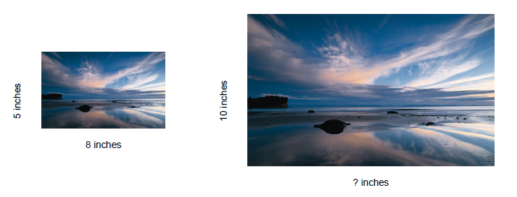
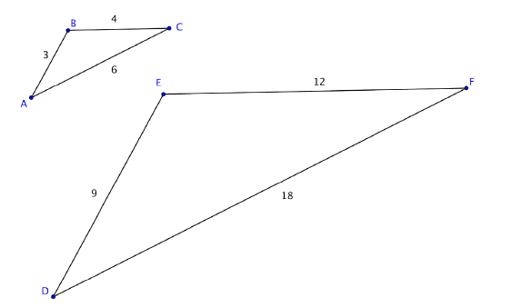
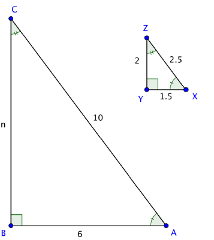
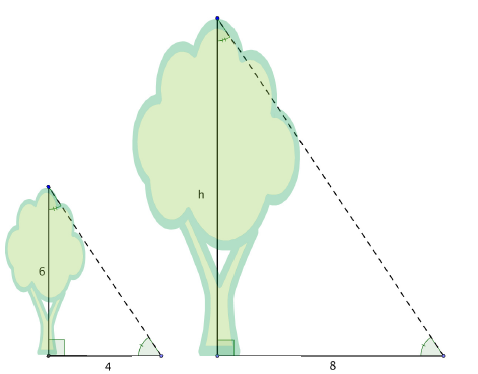
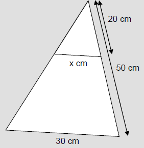
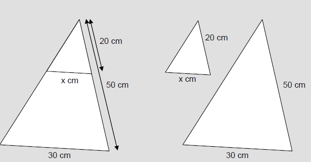

Chapter 2: The Language of Algebra
Section 2.6: Proportions
Learning Objective(s)
- Determine whether a proportion is true or false.
- Find an unknown in a proportion.
- Solve application problems using proportions.
- Solve application problems using similar triangles.
Introduction
A true proportion is an equation that states that two ratios are equal. If you know one ratio in a proportion, you can use that information to find values in the other equivalent ratio. Using proportions can help you solve problems such as increasing a recipe to feed a larger crowd of people, creating a design with certain consistent features, or enlarging or reducing an image to scale.
For example, imagine you want to enlarge a 5-inch by 8-inch photograph to fit a wood frame that you purchased. If you want the shorter edge of the enlarged photo to measure 10 inches, how long does the photo have to be for the image to scale correctly? You can set up a proportion to determine the length of the enlarged photo.
Determining Whether a Proportion Is True or False
A proportion is usually written as two equivalent fractions. For example:
\[\frac{12 \text{ inches}}{1 \text{ foot}} = \frac{36 \text{ inches}}{3 \text{ feet}}\]Notice that the equation has a ratio on each side of the equal sign. Each ratio compares the same units — inches and feet — and the ratios are equivalent because \(\dfrac{12}{1}\) is equivalent to \(\dfrac{36}{3}\).
Proportions might also compare two ratios with the same units. For example, Juanita has two different-sized containers of lemonade mix and wants to compare the number of ounces in each container to the number of servings each can make:
\[\frac{40 \text{ ounces}}{10 \text{ servings}} = \frac{84 \text{ ounces}}{21 \text{ servings}}\]Since the units for each ratio are the same, you can express the proportion without the units:
\[\frac{40}{84} = \frac{10}{21}\]When using this type of proportion, it is important that the numerators represent the same situation — in the example above, ounces — and the denominators represent the same situation — servings. Juanita could also have set up the proportion to compare container sizes to servings directly:
\[\frac{40 \text{ ounces}}{10 \text{ servings}} = \frac{84 \text{ ounces}}{21 \text{ servings}}\]Identifying True Proportions
To determine if a proportion compares equal ratios, follow these steps:
- Check that the units in the individual ratios are consistent either vertically or horizontally. For example, \(\dfrac{\text{miles}}{\text{hour}} = \dfrac{\text{miles}}{\text{hour}}\) or \(\dfrac{\text{miles}}{\text{miles}} = \dfrac{\text{hour}}{\text{hour}}\) are both valid setups.
- Express each ratio as a simplified fraction.
- If the simplified fractions are the same, the proportion is true; if they are different, the proportion is false.
Example 1
Is the proportion true or false? \[\frac{100 \text{ miles}}{4 \text{ gallons}} = \frac{50 \text{ miles}}{2 \text{ gallons}}\]
Solution
| Check units. | miles / gallons = miles / gallons | The units are consistent across the numerators (miles) and the denominators (gallons). |
| Simplify each ratio. | \(\dfrac{100 \div 4}{4 \div 4} = \dfrac{25}{1} \qquad \dfrac{50 \div 2}{2 \div 2} = \dfrac{25}{1}\) | Write each ratio in simplest form. |
| Compare. | \(\dfrac{25}{1} = \dfrac{25}{1}\) | The simplified fractions are equivalent, so the proportion is true. |
| Answer | The proportion is true. |
Example 2
One office has 3 printers for 18 computers. Another office has 20 printers for 105 computers. Is the ratio of printers to computers the same in both offices?
Solution
| Identify the relationship. | \(\dfrac{\text{printers}}{\text{computers}} = \dfrac{\text{printers}}{\text{computers}}\) | |
| Write as a proportion. | \(\dfrac{3 \text{ printers}}{18 \text{ computers}} = \dfrac{20 \text{ printers}}{105 \text{ computers}}\) | Write ratios that describe each situation and set them equal. |
| Check units. | printers / computers = printers / computers | Units in numerators and denominators both match. |
| Simplify each ratio. | \(\dfrac{3 \div 3}{18 \div 3} = \dfrac{1}{6} \qquad \dfrac{20 \div 5}{105 \div 5} = \dfrac{4}{21}\) | |
| Compare. | \(\dfrac{1}{6} \neq \dfrac{4}{21}\) | The simplified fractions are not equal, so the proportion is not true. |
| Answer | The ratio of printers to computers is not the same in these two offices. |
There is another method for determining whether a proportion is true or false called cross multiplying (or finding the cross product). To cross multiply, multiply the numerator of the first ratio by the denominator of the second ratio, and the denominator of the first ratio by the numerator of the second ratio. If these products are equal, the proportion is true.
This strategy is called cross-multiplying because the pattern of the multiplication looks like an "x" or criss-cross, as shown below.

In this example, \(3 \cdot 10 = 30\) and \(5 \cdot 6 = 30\). Both products are equal, so the proportion is true.
To see why this works, start with the true proportion \(\dfrac{4}{8} = \dfrac{5}{10}\). If we multiply both sides by 10, we get \(10 \cdot \dfrac{4}{8} = \dfrac{5}{10} \cdot 10\), and the right side simplifies to 5, leaving \(10 \cdot \dfrac{4}{8} = 5\). Multiplying both sides by 8 gives \(10 \cdot 4 = 5 \cdot 8\). This is exactly what we would get by cross-multiplying, so cross-multiplying is just a quick way to perform these operations.
Example 3
Is the proportion true or false? \[\frac{5}{6} = \frac{9}{8}\]
Solution

| Cross multiply. | \(5 \cdot 8 = 40 \qquad 6 \cdot 9 = 54\) | Use cross products to determine if the proportion is true or false. |
| Compare. | \(40 \neq 54\) | Since the products are not equal, the proportion is false. |
| Answer | The proportion is false. |
Self Check A
Is the proportion \(\dfrac{3}{5} = \dfrac{24}{40}\) true or false?
Using cross products: \(3 \cdot 40 = 120\) and \(5 \cdot 24 = 120\). The cross products are equal, so the proportion is true.
Finding an Unknown Quantity in a Proportion
If you know that the relationship between quantities is proportional, you can use proportions to find missing quantities.
Example 4
Solve for the unknown quantity \(n\): \[\frac{n}{4} = \frac{25}{20}\]
Solution
| Cross multiply. | \(20 \cdot n = 4 \cdot 25\) | |
| Simplify. | \(20n = 100\) | You are looking for a number that when multiplied by 20 gives 100. |
| Divide. | \(n = \dfrac{100}{20} = 5\) | Divide both sides by 20 to isolate \(n\). |
| Answer | \(n = 5\) |
Self Check B
Solve for the unknown quantity \(x\): \[\frac{15}{x} = \frac{6}{10}\]
Cross-multiplying gives \(6x = 150\). Dividing both sides by 6 gives \(x = 25\).
Now back to the original example. To enlarge a 5-inch by 8-inch photograph so that the shorter edge is 10 inches, you can set up a proportion to find the unknown length.

Example 5
Find the length of an enlarged photograph whose width is 10 inches, given that the original photograph is 5 inches wide and 8 inches long.
Solution
| Determine the relationship. | \(\dfrac{\text{width}}{\text{length}}\) | Original photo: 5 inches wide, 8 inches long. Enlarged photo: 10 inches wide, \(n\) inches long. |
| Write a proportion. | \(\dfrac{5}{8} = \dfrac{10}{n}\) | Set the two ratios equal to each other. |
| Cross multiply. | \(5 \cdot n = 8 \cdot 10\) | |
| Simplify. | \(5n = 80\) | You are looking for a number that when multiplied by 5 gives 80. |
| Divide. | \(n = \dfrac{80}{5} = 16\) | Divide both sides by 5 to isolate \(n\). |
| Answer | The length of the enlarged photograph is 16 inches. |
Solving Application Problems Using Proportions
Setting up and solving a proportion is a helpful strategy for solving a variety of proportional reasoning problems. It is always important to identify the unknown value first, then identify a proportional relationship to solve for it.
Example 6
Among a species of tropical birds, 30 out of every 50 birds are female. If a certain bird sanctuary has a population of 1,150 of these birds, how many would you expect to be female?
Solution
| Identify the unknown. | Let \(x\) = number of female birds in the sanctuary. | |
| Set up a proportion. | \(\dfrac{30 \text{ female}}{50 \text{ birds}} = \dfrac{x \text{ female}}{1{,}150 \text{ birds}}\) | Set the ratios equal. |
| Simplify the left ratio. | \(\dfrac{30 \div 10}{50 \div 10} = \dfrac{3}{5}\) | Simplify to make cross multiplication easier. |
| Cross multiply. | \(3 \cdot 1{,}150 = 5 \cdot x\) | |
| Simplify. | \(3{,}450 = 5x\) | |
| Divide. | \(x = \dfrac{3{,}450}{5} = 690\) | |
| Answer | You would expect 690 birds in the sanctuary to be female. |
Example 7
It takes Sandra 1 hour to word process 4 pages. At this rate, how long will she take to complete 27 pages?
Solution
| Set up a proportion. | \(\dfrac{4 \text{ pages}}{1 \text{ hour}} = \dfrac{27 \text{ pages}}{x \text{ hours}}\) | Compare pages typed to time taken. |
| Cross multiply. | \(4 \cdot x = 1 \cdot 27\) | |
| Simplify. | \(4x = 27\) | You are looking for a number that when multiplied by 4 gives 27. |
| Divide. | \(x = \dfrac{27}{4} = 6.75 \text{ hours}\) | |
| Answer | It will take Sandra 6.75 hours to complete 27 pages. |
Self Check C
A map uses a scale where 2 inches represents 5 miles. If the distance between two cities is shown on the map as 20 inches, how many miles apart are the two cities?
Set up the proportion:
\[\frac{2 \text{ inches}}{5 \text{ miles}} = \frac{20 \text{ inches}}{x \text{ miles}}\]Cross-multiplying gives \(2x = 100\), so \(x = 50\) miles.
The two cities are 50 miles apart.
Solving Application Problems Using Similar Triangles
In the photograph problem above, both the width and height of the image scaled proportionally when enlarged — we call the two rectangles similar. With triangles, two triangles are similar triangles if the ratios of the pairs of corresponding sides are equal. Consider the two triangles below.

Side AB corresponds with side DE, and so on. Each ratio of corresponding sides is equal:
\[\frac{9}{3} = \frac{12}{4} = \frac{18}{6}\]So these triangles are similar. If two triangles have the same angles, they will also be similar. You can find missing measurements in a triangle if you know some measurements of a similar triangle.
Example 8
\(\triangle ABC\) and \(\triangle XYZ\) are similar triangles. What is the length of side \(BC\)?

Solution
| Set up a proportion. | \(\dfrac{BC}{YZ} = \dfrac{AB}{XY}\) | In similar triangles, the ratios of corresponding sides are proportional. Set up a proportion that includes the missing side. |
| Substitute. | \(\dfrac{n}{2} = \dfrac{6}{1.5}\) | Substitute in the known side lengths. Let the unknown side length be \(n\). |
| Cross multiply. | \(2 \cdot 6 = 1.5 \cdot n\) | |
| Simplify. | \(12 = 1.5n\) | |
| Divide. | \(n = \dfrac{12}{1.5} = 8\) | |
| Answer | The missing length of side \(BC\) is 8 units. |
Be careful that your ratios represent corresponding sides — corresponding sides are opposite corresponding angles.
Applying knowledge of triangles, similarity, and congruence can be very useful for solving real-life problems. Just as you can solve for missing lengths of a triangle drawn on a page, you can use triangles to find unknown distances between locations or objects.
Consider two trees and their shadows. The trees themselves create one pair of corresponding sides. The shadows cast on the ground are another pair of corresponding sides. The third side of these imaginary similar triangles runs from the top of each tree to the tip of its shadow — the hypotenuse.
Example 9
When the sun is at a certain angle in the sky, a 6-foot tree will cast a 4-foot shadow. How tall is a tree that casts an 8-foot shadow?

Solution
| Identify similarity. | \(\dfrac{\text{Tree 1}}{\text{Tree 2}} = \dfrac{\text{Shadow 1}}{\text{Shadow 2}}\) | The angle measurements are the same, so the triangles are similar. Set up a proportion comparing heights to shadow lengths. |
| Substitute. | \(\dfrac{6}{h} = \dfrac{4}{8}\) | Substitute in the known lengths. Call the missing tree height \(h\). |
| Cross multiply. | \(6 \cdot 8 = 4 \cdot h\) | |
| Simplify. | \(48 = 4h\) | |
| Divide. | \(h = \dfrac{48}{4} = 12\) | |
| Answer | The tree is 12 feet tall. |
Self Check D
Find the unknown side \(x\).
Set up the proportion comparing corresponding sides:
\[\frac{20}{50} = \frac{x}{30}\]Cross-multiplying gives \(50x = 600\), so \(x = 12\) cm.
The unknown side is 12 cm.
Summary
A proportion is an equation comparing two ratios. If the ratios are equivalent, the proportion is true; if not, the proportion is false. Finding a cross product is a quick method for determining whether a proportion is true or false. Cross multiplying is also helpful for finding an unknown quantity in a proportional relationship. Setting up and solving proportions is a skill that is useful for solving a variety of problems, including those involving similar triangles.